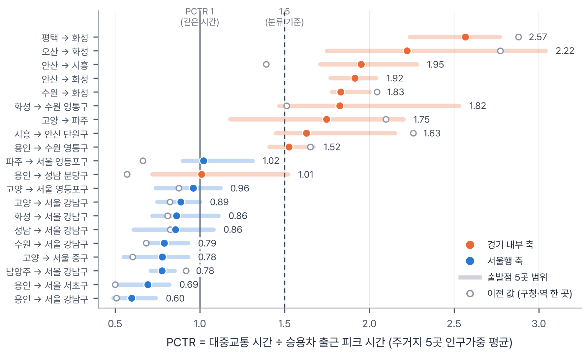
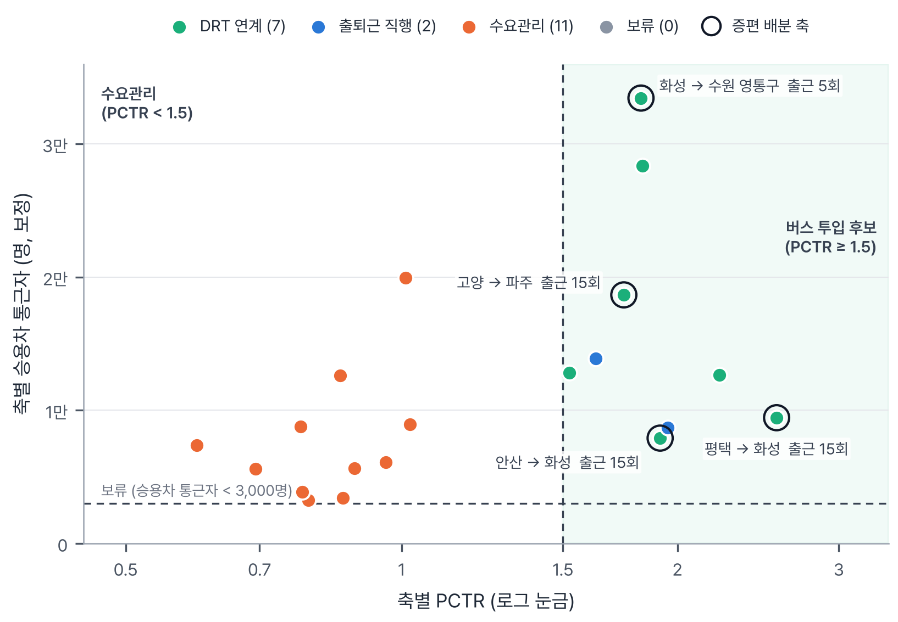
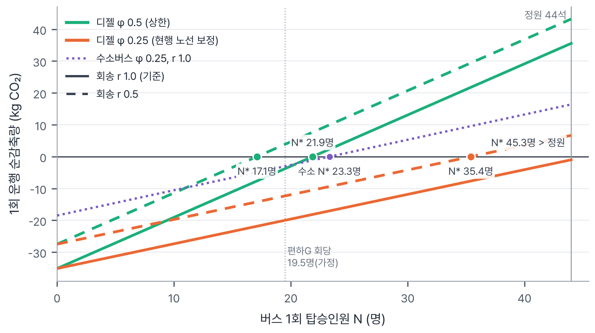
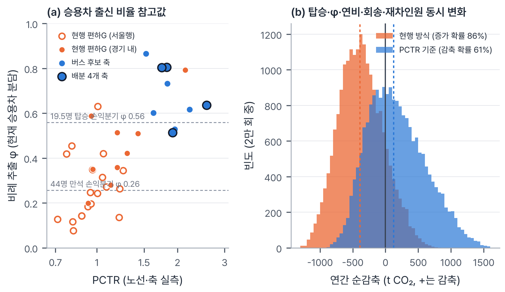

버스를 늘리면 승용차는 정말 줄어들까요?
경기도 통근자의 상당수는 혼자 승용차를 몰고 시군 경계를 넘어요. 경기에서 서울로 가는 통근의 승용차 분담은 55%이고, 도내 시군 사이를 오갈 때는 대중교통이 승용차보다 평균 2.1배 오래 걸려요.
경기도는 좌석·예약형 출퇴근 버스인 편하G버스를 하루 84회(2026)에서 184회(2030)로 늘릴 계획이에요. 그런데 노선이 도민 제안과 시군 수요조사로 정해지다 보니, 현행 28개 노선 대부분이 서울행이에요.
서울행은 이미 전철이 빠른 길이에요. 이 버스 승객이 원래 전철을 타던 사람이라면 도로 위 승용차는 그대로이고, 버스 배출만 더해져요. 출근을 마친 버스가 빈 차로 돌아가는 회송까지 생각하면 더 그래요.
그래서 저희는 새 서비스를 만드는 대신, 이미 있는 버스를 어느 축에, 어떤 방식으로, 몇 회 넣어야 하는지 정하는 기준을 데이터로 만들었어요.
기준이 되는 숫자, PCTR
1보다 작으면 대중교통이 더 빠르고, 2라면 대중교통이 두 배 오래 걸린다는 뜻이에요. 대중교통이 느린 곳일수록 사람들이 차를 몰기 때문에, PCTR이 높은 축이 버스로 승용차를 끌어올 수 있는 후보가 돼요.
출발점을 구청이나 역 한 곳으로 잡으면 값이 크게 흔들려요. 그래서 시군마다 주민이 가장 많이 사는 행정동 5곳을 고르고, 그 안에서 아파트·주택이 가장 몰린 실제 건물을 출발점으로 삼았어요. 승용차는 평일 오전 8시 출발 예측 시간, 대중교통은 카카오맵 추천 1순위 경로로 재고, 5곳을 인구로 가중 평균했어요.

데이터를 따라가 보면
-
승용차 통근이 가장 많은 곳은 경기도 안쪽이에요
국민연금 직장·거주지 이동 데이터에서 시군 경계를 넘는 통근 축 532개(211만 명)를 뽑았어요. 승용차 통근 상위 20개 축 중 10개가 경기 내부 축이고, 1위는 화성→수원 영통(약 3.3만 명)이에요.
이 20개 축 중 편하G가 다니는 곳은 용인→서울 강남 하나뿐이에요.

주황은 경기 내부, 파랑은 서울행, 검은 테두리는 증편을 배분한 4개 축이에요. -
서울행은 전철이 빠르고, 경기 내부는 차가 두 배 가까이 빨라요
축별 PCTR 평균은 경기 내부 1.82, 서울행 0.82예요. 출발점 하나하나로 봐도 PCTR 1.5 이상은 경기 내부 50곳 중 41곳, 서울행 50곳 중 0곳이었어요. 현행 편하G 28개 노선은 평균 1.06이고, 1.5를 넘는 노선은 1개뿐이에요.
-
버스를 새로 넣을 만한 축은 9개예요
축마다 대중교통이 왜 느린지 진단했더니 수요관리 11개, DRT 연계 7개, 출퇴근 직행 2개가 나왔어요. 서울행 10개 축은 모두 수요관리예요.
DRT 연계로 진단된 축에서도 역까지 데려다주는 똑버스는 승용차를 끌어오지 못했어요. 평균 대기 14분이 걷는 시간을 줄여 얻는 이득보다 길었거든요. 그래서 이런 축에도 아파트 단지 안에 서는 직행버스를 권해요.

PCTR × 승용차 통근자로 본 분류. 테두리 원이 증편을 배분한 축이에요. -
기준은 회당 승용차 출신 승객 약 11명이에요
현대자동차 공식 제원으로 유니버스 디젤 44석과 쏘나타의 주행 연료를 차량 동역학 모델로 계산했어요. 승객 중 원래 승용차 이용자 비율 φ가 1.0이면 10.7명, 0.5면 21.9명, 0.25면 45.3명이 타야 본전이에요.
두 값을 곱한 회당 승용차 출신 승객으로 보면, 탑승 인원이나 노선 길이와 거의 상관없이 약 11명(20명 탑승 10.9명, 44명 탑승 11.3명)이에요. 위의 좌석 배치도가 바로 이 계산이에요.

유니버스 디젤 44석 1회의 탄소 손익분기. 수소버스는 φ 0.25에서 23.3명이면 넘어요. -
같은 100회도 어디에 넣느냐에 따라 결과가 갈려요
2030년 증편분 100회(출근 50 + 퇴근 50)를 탄소를 가장 많이 줄이는 축부터 배분했어요. 평택→화성(기아 화성공장), 고양→파주(LG디스플레이), 안산→화성(현대차 남양연구소), 화성→수원 영통(삼성 디지털시티) 4개 축이 뽑혔어요.
구분 배분 대상 회당 탑승 × φ 하루 이용 연간 순감축 PCTR 기준 경기 내부 4개 축 44명 × 0.5 = 22명 2,200명 +1,020 tCO₂ 현행 방식 현 28개 노선에 비례 19.5명 × 0.25 ≈ 5명 1,032명 −793 tCO₂ (증가) "회당 44명, φ 0.5"는 모형이 내놓은 값이라 그대로 믿기 어려워요. 그래서 탑승과 φ를 직접 바꿔 가며 다시 계산했어요. 칸의 값은 PCTR 기준 / 같은 조건의 현행 방식이에요.
회당 탑승 φ = 0.25 φ = 0.35 φ = 0.5 20명 −563 / −754 −372 / −498 −86 / −115 30명 −340 / −455 −54 / −72 +375 / +502 44명 −28 / −38 +391 / +524 +1,020 / +1,367 단위 tCO₂/년. 초록은 순감축, 빨강은 순증가예요.
솔직하게 말하면, 탑승과 φ가 같을 때는 노선이 더 긴 현행 방식의 절댓값이 오히려 커요. PCTR 기준이 유리한 이유는 "대중교통이 느린 축일수록 승용차 출신 승객이 많고 더 많이 탄다"는 가설 하나예요. 그래서 이 가설을 직접 흔들어 봤어요.
0.69 : 0.33지금의 통근 수단 구성대로 승객이 온다고 본 φ 참고값, 배분 축 대 현행 노선61%탑승·φ·연비·회송·재차인원을 동시에 2만 번 뽑았을 때 PCTR 기준이 순감축일 확률86%같은 계산에서 현행 방식이 순증가일 확률
(a) 현행 노선과 버스 후보 축의 φ 참고값. (b) 2만 회 계산의 연간 순감축 분포, 점선은 중앙값이에요. 버스 승객 중 원래 대중교통 이용자(1−φ)에게도 편익이 있어요. 서울행 노선은 광역버스·전철 출근 혼잡을 덜어 주고, 산단 축은 통근시간이 확 줄어요. 평택→화성은 151분에서 69분, 안산→화성은 96분에서 60분이 돼요.
그래서 이렇게 제안해요
- 노선을 고를 때 PCTR과 11명 기준을 확인해요. 주거지 5곳 PCTR이 1.5 이상인지, 개통 전 주민 설문으로 본 회당 승용차 출신 승객이 11명 이상인지 봐요.
- 2030 증편분은 경기 내부 산단 축부터 시범 배치해요. 1년 운행 실적으로 11명 기준을 확인한 뒤 넓혀요.
- 증편 목적을 먼저 정해요. 탄소 감축이 목적이면 산단 축, 서울행은 출근 혼잡 완화 수단으로 봐요.
- 걷는 게 문제인 축은 단지 안에 서는 직행으로 운영해요. 역 연계 DRT는 대기를 7~11분 이하로 줄일 수 있을 때만 써요.
- 대기업 사업장 축은 기업 통근버스와 함께 짜요. 기업 버스가 닿지 않는 주거지·협력사 직원을 도가 맡아요.
- 노선별 탑승 실적과 이전 이용 수단 설문을 공개해 주세요. 그러면 이 기준을 노선마다 바로 검증할 수 있어요.
아직 확인이 필요한 부분
- 편하G 이용자가 원래 무엇을 타던 사람인지 공개된 설문이 없어서, φ는 비슷한 서비스의 설문 값과 GTX-A 전환 사례로 대신했어요. 배분 축 목적지는 자체 통근버스가 있는 대기업이라 수요가 과대일 수 있어요.
- 수단 분담은 인구총조사 2020(코로나 시기) 기준이고, 국민연금 직장 주소는 사업장 등록지라 본사 소재지가 과대 집계될 수 있어요.
- 카카오맵 PC웹 대중교통 길찾기는 출발시각을 정할 수 없어 출근 시간대 혼잡이 반영되지 않았어요. 현대자동차가 유니버스 디젤과 쏠라티의 공인연비를 공개하지 않아 연비는 2차 자료로 산정했어요.